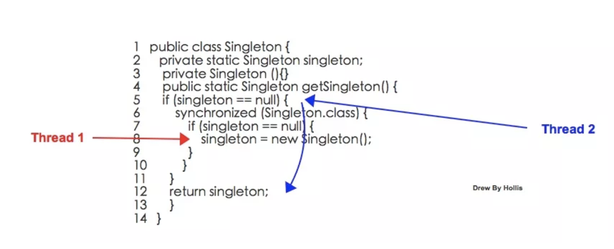
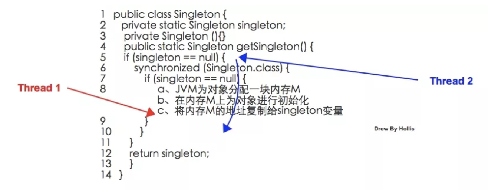
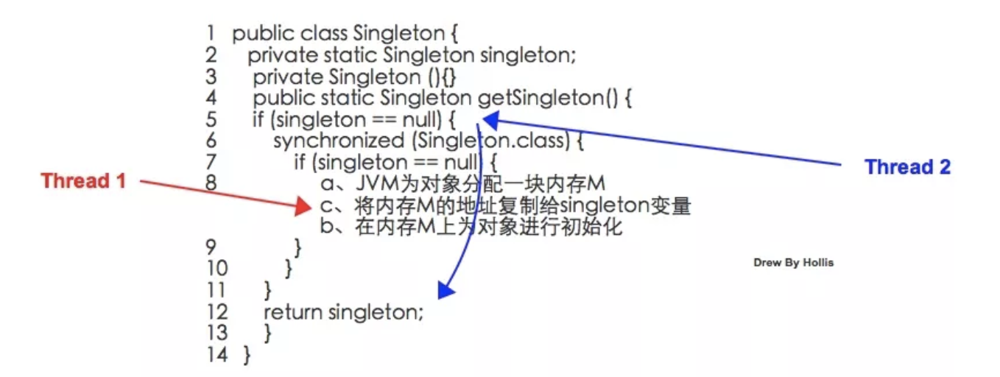

既生synchronized，何生volatile？！¶
在我的博客和公众号中，发表过很多篇关于并发编程的文章，之前的文章中我们介绍过了两个在Java并发编程中比较重要的两个关键字：synchronized和volatile
我们简单回顾一下相关内容：
- Java语言为了解决并发编程中存在的原子性、可见性和有序性问题，提供了一系列和并发处理相关的关键字，比如synchronized、volatile、final、concurren包等。
- synchronized通过加锁的方式，使得其在需要原子性、可见性和有序性这三种特性的时候都可以作为其中一种解决方案，看起来是“万能”的。的确，大部分并发控制操作都能使用synchronized来完成。
- volatile通过在volatile变量的操作前后插入内存屏障的方式，保证了变量在并发场景下的可见性和有序性。
- volatile关键字是无法保证原子性的，而synchronized通过monitorenter和monitorexit两个指令，可以保证被synchronized修饰的代码在同一时间只能被一个线程访问，即可保证不会出现CPU时间片在多个线程间切换，即可保证原子性。
那么，我们知道，synchronized和volatile两个关键字是Java并发编程中经常用到的两个关键字，而且，通过前面的回顾，我们知道synchronized可以保证并发编程中不会出现原子性、可见性和有序性问题，而volatile只能保证可见性和有序性，那么，既生synchronized、何生volatile？
接下来，本文就来论述一下，为什么Java中已经有了synchronized关键字，还要提供volatile关键字。
1. synchronized的问题¶
我们都知道synchronized其实是一种加锁机制，那么既然是锁，天然就具备以下几个缺点：
1、有性能损耗
虽然在JDK 1.6中对synchronized做了很多优化，如如适应性自旋、锁消除、锁粗化、轻量级锁和偏向锁等，但是他毕竟还是一种锁。
以上这几种优化，都是尽量想办法避免对Monitor进行加锁，但是，并不是所有情况都可以优化的，况且就算是经过优化，优化的过程也是有一定的耗时的。
所以，无论是使用同步方法还是同步代码块，在同步操作之前还是要进行加锁，同步操作之后需要进行解锁，这个加锁、解锁的过程是要有性能损耗的。
关于二者的性能对比，由于虚拟机对锁实行的许多消除和优化，使得我们很难量化这两者之间的性能差距，但是我们可以确定的一个基本原则是：volatile变量的读操作的性能小号普通变量几乎无差别，但是写操作由于需要插入内存屏障所以会慢一些，即便如此，volatile在大多数场景下也比锁的开销要低。
2、产生阻塞
我们在深入理解多线程（一）——Synchronized的实现原理中介绍过关于synchronize的实现原理，无论是同步方法还是同步代码块，无论是ACC_SYNCHRONIZED还是monitorenter、monitorexit都是基于Monitor实现的。
基于Monitor对象，当多个线程同时访问一段同步代码时，首先会进入Entry Set，当有一个线程获取到对象的锁之后，才能进行The Owner区域，其他线程还会继续在Entry Set等待。并且当某个线程调用了wait方法后，会释放锁并进入Wait Set等待。

所以，synchronize实现的锁本质上是一种阻塞锁，也就是说多个线程要排队访问同一个共享对象。
而volatile是Java虚拟机提供的一种轻量级同步机制，他是基于内存屏障实现的。说到底，他并不是锁，所以他不会有synchronized带来的阻塞和性能损耗的问题。
2. volatile的附加功能¶
除了前面我们提到的volatile比synchronized性能好以外，volatile其实还有一个很好的附加功能，那就是禁止指令重排。
我们先来举一个例子，看一下如果只使用synchronized而不使用volatile会发生什么问题，就拿我们比较熟悉的单例模式来看。
我们通过双重校验锁的方式实现一个单例，这里不使用volatile关键字：
1 2 3 4 5 6 7 8 9 10 11 12 13 14 15 16 17 | public class Singleton { private static Singleton singleton; private Singleton (){} public static Singleton getSingleton() { if (singleton == null) { synchronized (Singleton.class) { if (singleton == null) { singleton = new Singleton(); } } } return singleton; } } |
以上代码，我们通过使用synchronized对Singleton.class进行加锁，可以保证同一时间只有一个线程可以执行到同步代码块中的内容，也就是说singleton = new Singleton()这个操作只会执行一次，这就是实现了一个单例。
但是，当我们在代码中使用上述单例对象的时候有可能发生空指针异常。这是一个比较诡异的情况。
我们假设Thread1 和 Thread2两个线程同时请求Singleton.getSingleton方法的时候：

- Step1 ,Thread1执行到第8行，开始进行对象的初始化。
- Step2 ,Thread2执行到第5行，判断singleton == null。
- Step3 ,Thread2经过判断发现singleton ！= null，所以执行第12行，返回singleton。
- Step4 ,Thread2拿到singleton对象之后，开始执行后续的操作，比如调用singleton.call()。
以上过程，看上去并没有什么问题，但是，其实，在Step4，Thread2在调用singleton.call()的时候，是有可能抛出空指针异常的。
之所有会有NPE抛出，是因为在Step3，Thread2拿到的singleton对象并不是一个完整的对象。
什么叫做不完整对象，这个怎么理解呢？
我们这里来先来看一下，singleton = new Singleton();这行代码到底做了什么事情，大致过程如下：
- 虚拟机遇到new指令，到常量池定位到这个类的符号引用。
- 检查符号引用代表的类是否被加载、解析、初始化过。
- 虚拟机为对象分配内存。
- 虚拟机将分配到的内存空间都初始化为零值。
- 虚拟机对对象进行必要的设置。
- 执行方法，成员变量进行初始化。
- 将对象的引用指向这个内存区域。
我们把这个过程简化一下，简化成3个步骤：
- JVM为对象分配一块内存M
- 在内存M上为对象进行初始化
- 将内存M的地址复制给singleton变量

因为将内存的地址赋值给singleton变量是最后一步，所以Thread1在这一步骤执行之前，Thread2在对singleton==null进行判断一直都是true的，那么他会一直阻塞，直到Thread1将这一步骤执行完。
但是，问题就出在以上过程并不是一个原子操作，并且编译器可能会进行重排序，如果以上步骤被重排成：
- a、JVM为对象分配一块内存M
- c、将内存的地址复制给singleton变量
- b、在内存M上为对象进行初始化
如下图：

这样的话，Thread1会先执行内存分配，在执行变量赋值，最后执行对象的初始化，那么，也就是说，在Thread1还没有为对象进行初始化的时候，Thread2进来判断singleton==null就可能提前得到一个false，则会返回一个不完整的sigleton对象，因为他还未完成初始化操作。
这种情况一旦发生，我们拿到了一个不完整的singleton对象，当尝试使用这个对象的时候就极有可能发生NPE异常。
那么，怎么解决这个问题呢？因为指令重排导致了这个问题，那就避免指令重排就行了。
所以，volatile就派上用场了，因为volatile可以避免指令重排。只要将代码改成以下代码，就可以解决这个问题：
1 2 3 4 5 6 7 8 9 10 11 12 13 14 | public class Singleton { private volatile static Singleton singleton; private Singleton (){} public static Singleton getSingleton() { if (singleton == null) { synchronized (Singleton.class) { if (singleton == null) { singleton = new Singleton(); } } } return singleton; } } |
对singleton使用volatile约束，保证他的初始化过程不会被指令重排。这样就可以保Thread2 要不然就是拿不到对象，要不然就是拿到一个完整的对象。
3. synchronized的有序性保证呢？¶
看到这里可能有朋友会问了，说到底上面问题是发生了指令重排，其实还是个有序性的问题，不是说synchronized是可以保证有序性的么，这里为什么就不行了呢？
首先，可以明确的一点是：synchronized是无法禁止指令重排和处理器优化的。那么他是如何保证的有序性呢？
这就要再把有序性的概念扩展一下了。Java程序中天然的有序性可以总结为一句话：如果在本线程内观察，所有操作都是天然有序的。如果在一个线程中观察另一个线程，所有操作都是无序的。
以上这句话也是《深入理解Java虚拟机》中的原句，但是怎么理解呢？周志明并没有详细的解释。这里我简单扩展一下，这其实和as-if-serial语义有关。
as-if-serial语义的意思指：不管怎么重排序，单线程程序的执行结果都不能被改变。编译器和处理器无论如何优化，都必须遵守as-if-serial语义。
这里不对as-if-serial语义详细展开了，简单说就是，as-if-serial语义保证了单线程中，不管指令怎么重排，最终的执行结果是不能被改变的。
那么，我们回到刚刚那个双重校验锁的例子，站在单线程的角度，也就是只看Thread1的话，因为编译器会遵守as-if-serial语义，所以这种优化不会有任何问题，对于这个线程的执行结果也不会有任何影响。
但是，Thread1内部的指令重排却对Thread2产生了影响。
那么，我们可以说，synchronized保证的有序性是多个线程之间的有序性，即被加锁的内容要按照顺序被多个线程执行。但是其内部的同步代码还是会发生重排序，只不过由于编译器和处理器都遵循as-if-serial语义，所以我们可以认为这些重排序在单线程内部可忽略。
4. 总结¶
本文从两方面论述了volatile的重要性以及不可替代性：
一方面是因为synchronized是一种锁机制，存在阻塞问题和性能问题，而volatile并不是锁，所以不存在阻塞和性能问题。
另外一方面，因为volatile借助了内存屏障来帮助其解决可见性和有序性问题，而内存屏障的使用还为其带来了一个禁止指令重排的附件功能，所以在有些场景中是可以避免发生指令重排的问题的。
所以，在日后需要做并发控制的时候，如果不涉及到原子性的问题，可以优先考虑使用volatile关键字。